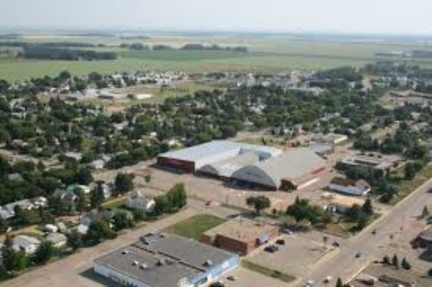
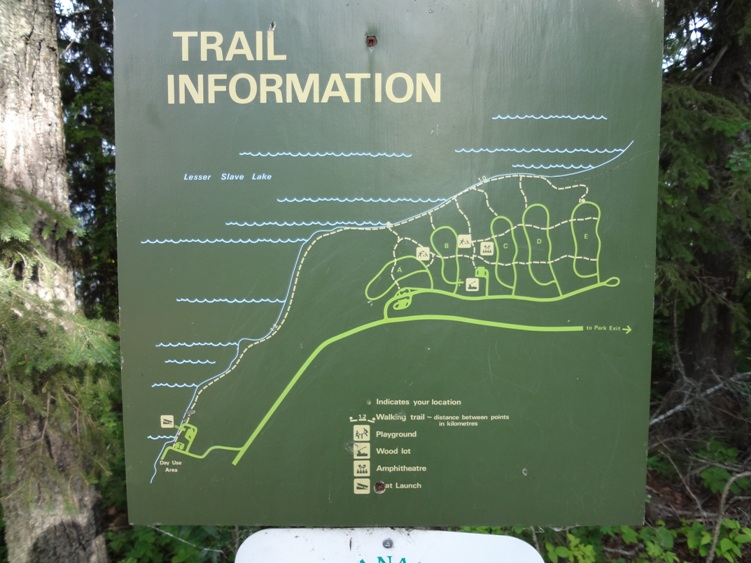

the town is surrounded by prairies and farms. Also, it is located in the parkland and boreal forest which includes the jack pines. High prairie is in the Peace Country, which houses the Lesser Slave Lake and is one of the most beautiful lakes to swim at Hilliard’s Bay which is a popular swim hole for locals and tourists. The geography located around High Prairie is quite diverse and unique to the area.
I am always at peace when I walk through the Jack pines or walk along the trails located around lesser slave lake. The refreshing feel of being able to escape town and go into the middle of nowhere and restart your mind and body helps keep you healthy and focused. JC Park is a great place to ride your bike along the trail by the river. It is also a great place for artists to sit and draw wildlife.
